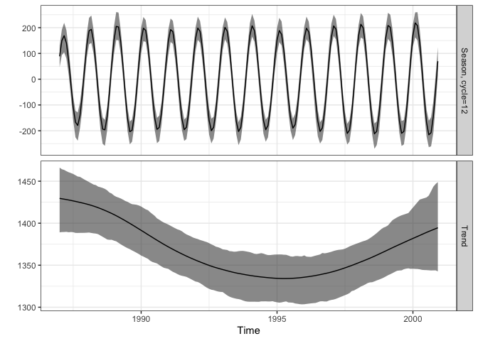
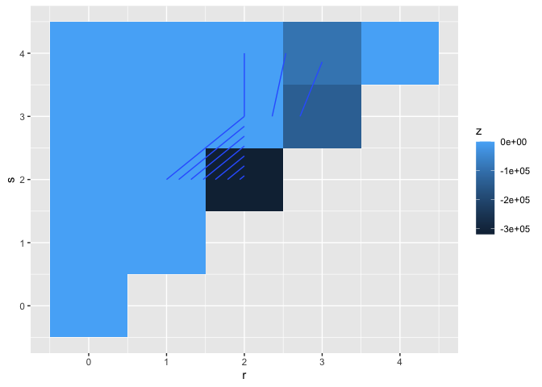
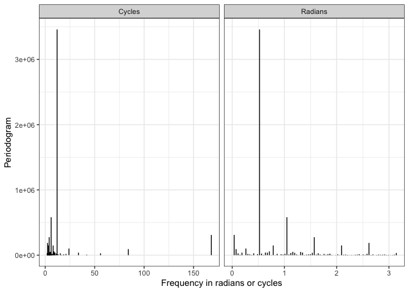

R package to run seasonal analyses in time series. For details see our book “Analysing Seasonal Health Data” (2010) https://www.springer.com/gp/book/9783642107474.
Installation
You can install season via the R-Universe
install.packages('season', repos = c('https://agbarnett.r-universe.dev', 'https://cloud.r-project.org'))Example usage
Useful functions of season are:
-
casecross()for case-crossover analysis -
nscosinor()to estimate non-stationary seasonal patterns using the Kalman filter -
nonlintest()for a time domain test of non-linearity
Accompanying each of these functions are broom tidiers (tidy(), glance(), augment()), and some of the models have summary plots that you can see using autoplot()
Let’s run a quick demonstration of these
casecross(): case-crossover analysis
CVDdaily <- subset(CVDdaily, date <= as.Date('1987-12-31'))
head(CVDdaily)
#> date cvd dow tmpd o3mean o3tmean Mon Tue Wed Thu Fri Sat
#> 3 1987-01-01 55 Thursday 54.50 -16.0073 -15.89619 0 0 0 1 0 0
#> 5 1987-01-02 73 Friday 58.50 -11.6595 -11.19102 0 0 0 0 1 0
#> 9 1987-01-03 64 Saturday 55.25 -10.3241 -10.51787 0 0 0 0 0 1
#> 12 1987-01-04 57 Sunday 54.75 -18.6471 -18.27014 0 0 0 0 0 0
#> 15 1987-01-05 56 Monday 54.50 -17.5291 -17.13201 1 0 0 0 0 0
#> 18 1987-01-06 65 Tuesday 49.75 -22.7846 -22.74711 0 1 0 0 0 0
#> month winter spring summer autumn
#> 3 1 1 0 0 0
#> 5 1 1 0 0 0
#> 9 1 1 0 0 0
#> 12 1 1 0 0 0
#> 15 1 1 0 0 0
#> 18 1 1 0 0 0
# Effect of ozone on CVD death
casecross_cvd <- casecross(
cvd ~ o3mean + tmpd + Mon + Tue + Wed + Thu + Fri + Sat,
data = CVDdaily
)
summary(casecross_cvd)
#> Time-stratified case-crossover with a stratum length of 28 days
#> Total number of cases 17502
#> Number of case days with available control days 364
#> Average number of control days per case day 23.2
#>
#> Parameter Estimates:
#> coef exp(coef) se(coef) z Pr(>|z|)
#> o3mean -0.002882613 0.9971215 0.001128975 -2.55330077 0.01067073
#> tmpd 0.001461400 1.0014625 0.001981047 0.73769030 0.46070267
#> Mon 0.042733425 1.0436596 0.028942815 1.47647783 0.13981566
#> Tue 0.057910712 1.0596204 0.028772745 2.01269332 0.04414690
#> Wed -0.010008025 0.9900419 0.029171937 -0.34307029 0.73154558
#> Thu -0.016790296 0.9833499 0.029455877 -0.57001513 0.56866744
#> Fri 0.027247952 1.0276226 0.029173235 0.93400517 0.35030123
#> Sat 0.001855841 1.0018576 0.028900116 0.06421568 0.94879849
# broom tidiers
# tidy - one row per term, similar to `summary()`
tidy(casecross_cvd)
#> # A tibble: 8 × 5
#> term estimate std.error statistic p.value
#> <chr> <dbl> <dbl> <dbl> <dbl>
#> 1 o3mean -0.00288 0.00113 -2.55 0.0107
#> 2 tmpd 0.00146 0.00198 0.738 0.461
#> 3 Mon 0.0427 0.0289 1.48 0.140
#> 4 Tue 0.0579 0.0288 2.01 0.0441
#> 5 Wed -0.0100 0.0292 -0.343 0.732
#> 6 Thu -0.0168 0.0295 -0.570 0.569
#> 7 Fri 0.0272 0.0292 0.934 0.350
#> 8 Sat 0.00186 0.0289 0.0642 0.949
# glance - one row summary of model
glance(casecross_cvd)
#> # A tibble: 1 × 18
#> n nevent statistic.log p.value.log statistic.sc p.value.sc statistic.wald
#> <int> <dbl> <dbl> <dbl> <dbl> <dbl> <dbl>
#> 1 8815 365 20.4 0.00901 20.4 0.00888 20.4
#> # ℹ 11 more variables: p.value.wald <dbl>, statistic.robust <dbl>,
#> # p.value.robust <dbl>, r.squared <dbl>, r.squared.max <dbl>,
#> # concordance <dbl>, std.error.concordance <dbl>, logLik <dbl>, AIC <dbl>,
#> # BIC <dbl>, nobs <dbl>
# augment - add model predictions back on to data
augment(casecross_cvd)
#> # A tibble: 8,815 × 15
#> .rownames `Surv(timex, case)` o3mean tmpd Mon Tue Wed Thu Fri
#> <chr> <Surv> <dbl> <dbl> <dbl> <dbl> <dbl> <dbl> <dbl>
#> 1 3 1 -16.0 54.5 0 0 0 1 0
#> 2 5 1 -11.7 58.5 0 0 0 0 1
#> 3 9 1 -10.3 55.2 0 0 0 0 0
#> 4 12 1 -18.6 54.8 0 0 0 0 0
#> 5 15 1 -17.5 54.5 1 0 0 0 0
#> 6 18 1 -22.8 49.8 0 1 0 0 0
#> 7 21 1 -19.1 53.5 0 0 1 0 0
#> 8 24 1 -18.5 52.5 0 0 0 1 0
#> 9 27 1 -17.3 54 0 0 0 0 1
#> 10 30 1 -14.2 56 0 0 0 0 0
#> # ℹ 8,805 more rows
#> # ℹ 6 more variables: Sat <dbl>, `strata(time)` <fct>, `(weights)` <int>,
#> # .fitted <dbl>, .se.fit <dbl>, .resid <dbl>
nscosinor() to estimate non-stationary seasonal patterns using the Kalman filter
f <- c(12)
tau <- c(10, 50)
res12 <- nscosinor(
data = CVD,
response = 'adj',
cycles = f,
niters = 200,
burnin = 50,
tau = tau
)
#> Iteration number 50 of 200 Iteration number 100 of 200 Iteration number 150 of 200 Iteration number 200 of 200
summary(res12)
#> Statistics for non-stationary cosinor based on MCMC chains
#> Number of MCMC samples = 151
#>
#> Standard deviations
#> Residual, mean=115.241, 95% CI [100.978, 133.356]
#> Cycle=12
#> Season, mean=0.0985381, 95% CI [0.0681559, 0.146523]
#>
#> Phase and amplitude
#> Cycle=12
#> Amplitude, mean=202.506, 95% CI [181.455, 225.563]
#> Phase (radians), mean=0.703173, 95% CI [0.601867, 0.816469]
# broom tidiers
tidy(res12)
#> # A tibble: 4 × 4
#> term mean lower upper
#> <chr> <dbl> <dbl> <dbl>
#> 1 std.error 115. 101. 133.
#> 2 std.season1 0.0985 0.0682 0.147
#> 3 phase1 0.703 0.602 0.816
#> 4 amplitude1 203. 181. 226.
autoplot(res12)
nonlintest() for a time domain test of non-linearity
test_res <- nonlintest(data = CVD$cvd, n.lag = 4, n.boot = 1000)
test_res
#> Largest and smallest co-ordinates of the third-order moment outside the test limits
#> Largest difference is zero
#> Largest negative difference at lags:
#> 2 2
#> Size of largest negative difference:
#> -318975.4
#>
#> Bootstrap test of non-linearity using the third-order moment
#> Statistics for areas outside test limits:
#> observed obs/SD median-null 95%-null p-value
#> 552361.8 0.932211 0 1406467 0.149
autoplot(test_res)
Other helper functions
use invyrfraction_num/chr to invert a fraction of the year or hour to a useful time scale:
year_frac <- c(0, 0.5, 0.99)
invyrfraction_num(year_frac, type = "weekly")
#> [1] 1.00 27.00 52.48
invyrfraction_chr(year_frac, type = "weekly")
#> [1] "Week = 1" "Week = 27" "Week = 52.5"
invyrfraction_num(year_frac, type = "daily")
#> [1] 1.0000 183.6250 362.5975
invyrfraction_chr(year_frac, type = "daily")
#> [1] "Month = January , day = 1" "Month = July , day = 2"
#> [3] "Month = December , day = 28"
invyrfraction_num(year_frac, type = "monthly")
#> [1] 1.00 7.00 12.88
invyrfraction_chr(year_frac, type = "monthly")
#> [1] "Month = 1" "Month = 7" "Month = 12.9"Estimate a periodogram using the fast Fourier transform (fft).
p <- peri(CVD$cvd)
p
#> # A tibble: 85 × 5
#> peri freq_radians freq_cycles amp phase
#> <dbl> <dbl> <dbl> <dbl> <dbl>
#> 1 6.30e-25 0 NA 8.66e-14 0
#> 2 3.10e+ 5 0.0374 168 6.07e+ 1 0.357
#> 3 9.27e+ 4 0.0748 84 3.32e+ 1 0.641
#> 4 2.83e+ 4 0.112 56 1.83e+ 1 2.12
#> 5 7.04e+ 3 0.150 42 9.16e+ 0 2.96
#> 6 3.85e+ 4 0.187 33.6 2.14e+ 1 3.23
#> 7 4.46e+ 2 0.224 28 2.30e+ 0 1.65
#> 8 1.02e+ 5 0.262 24 3.48e+ 1 2.70
#> 9 1.90e+ 4 0.299 21 1.50e+ 1 0.846
#> 10 1.18e+ 4 0.337 18.7 1.18e+ 1 2.45
#> # ℹ 75 more rows
autoplot(p)
For full details see the season website.